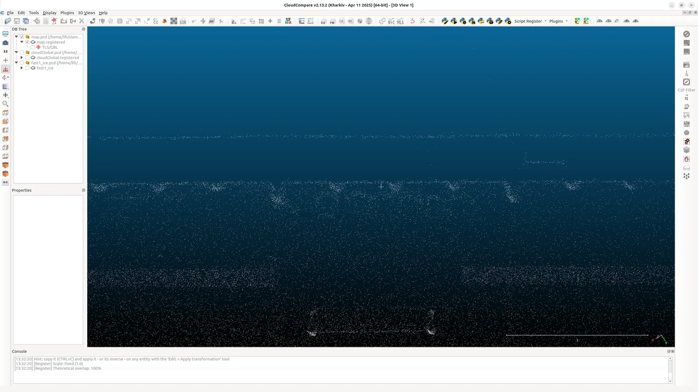

激光SLAM算法测评
建图精度对比
面向办公室与足球实验场地进行FAST-LIO1、FAST-LIO2和LIO-SAM算法的对比测试，测试结果如下：
FAST-LIO1 足球场细节图1
FAST-LIO1 足球场细节图2
FAST-LIO1 办公室

FAST-LIO2 足球场细节图1
FAST-LIO2 足球场细节图2
FAST-LIO2 办公室
LIO-SAM 足球场细节图1
LIO-SAM 足球场细节图2
LIO-SAM 办公室
通过建图结果对比发现，FAST-LIO1建图得到的墙壁点云较厚，FAST-LIO2与LIO-SAM建图结果相似，进一步对比FAST-LIO2与LIO-SAM。
稳定性对比
FAST-LIO2

FAST-LIO2 Odometry

FAST-LIO2 PGO
LIO-SAM
LIO-SAM Odometry

LIO-SAM PGO
为FAST-LIO2接入一个简单的回环检测模块：接收并时间同步前端里程计位姿和点云数据，判断是否满足关键帧条件（平移距离超过0.5米或时间间隔超过10秒），若满足则将其作为新的关键帧添加到姿态图优化中，并以第一帧的位姿作为固定节点。对于每个新的关键帧，使用KD树算法在全局位姿图中搜索2米范围内的回环候选，并通过ICP算法进行点云配准验证。如果验证成功，添加回环约束到优化图中，同时发布回环信息进行可视化。
LIO-SAM较FAST-LIO2更稳定一些，选择LIO-SAM为基础框架。
漂移原因：
毛玻璃粗糙不均匀的磨砂纹理在近场效应下，易产生噪声或异常反射率读数，干扰算法初始化。
毛玻璃与白墙建图效果对比：
LIO-SAM重定位框架
重定位效果可视化展示
实时演示
时长: 1:35
基于Scan Context开发载入离线pcd地图的重定位模块
调研STD、ScanContext（SC）描述子，选择SC描述子展开基于地图的重定位模块。
在建图阶段保存每一帧点云子地图及其对应的SC描述子。重定位启动后，利用RingKey快速检索历史候选帧，大幅缩小匹配范围；随后通过完整的SC描述子精确比对，确定最相关的历史帧。最后将该历史帧的局部点云与当前全局地图进行NDT+ICP匹配，进行最终验证并获取机器人的初始位姿。
DWB控制器效果：
控制器测试
时长: 0:46
DWB（Dynamic Window Approach）控制器是一种轮式机器人局部规划方法，直接应用于人形机器人时存在适配性问题。应用在Booster T1平台后发现：机器人容易"走进障碍物"、"走进"障碍物后原地转圈无法逃脱、DWB预测位姿与现实情况严重不符。
PID控制器效果：
控制器测试
时长: 0:31
PID控制器表现更为稳定，能够更好地适应人形机器人的运动特性，减少了"走进障碍物"的问题。
基于极坐标搜索的逃脱策略：
逃脱策略
时长: 0:31
以机器人位置为中心，按设定的半径步长向外逐层扩展，在每一层半径上，采用左右交替的角度采样方式生成候选点，并通过碰撞检测模块判断其可行性。对每个候选点，通过碰撞检测模块判断其是否处于无障碍区域。一旦检测到首个无障碍候选点，即将其确定为逃脱目标位姿，作为机器人执行逃脱运动的参考目标；若在最大搜索半径内未能找到可行点，则判定为搜索失败，结束本次逃脱尝试。
BEV数据集采集 - 动静态分离
BEV动静态点云标签
红色为动态点云，白色为静态地图点云。
利用LIO-SAM的离线地图重定位功能获取当前LiDAR位姿附近10×10m区域的高密度点云地图，并对当前帧点云进行相同区域与方位的裁剪，从而缓解单帧点云稀疏的问题。同时触发相机采集并保存全景图像，实现与雷达的软同步，保证多传感器数据在时空上的一致性。在数据处理环节，将获取的稠密点云地图作为静态参考系，构建并膨胀体素占用网格，通过空间匹配算法对比当前帧LiDAR点云与静态地图，分离出动态与静态点云。对于动态点云部分，采用DBSCAN聚类算法去除小簇噪声点，提升BEV数据的完整性与可靠性。